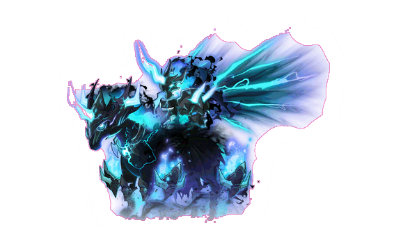

익스트림 림보·발드릭스는 입장 시각부터 확인하세요
림보 · 익스트림
공식 최초 입장 가능 시각은 10월 23일 19:00입니다.

발드릭스 · 익스트림
공식 최초 입장 가능 시각은 10월 23일 20:00입니다.
게임 패치는 10월 22일에 적용되지만 신규 익스트림 도전은 다음 날 시작합니다. 공식 안내에서 도전 시각이 변경되면 실제 게임의 안내를 우선하세요. 주간 보스에서 기록 주차와 실제 난이도를 선택하고, 파티 인원을 입력해 내 결정석 몫을 확인합니다.
신규 보상인 익셉셔널 해머 (포켓) · 익셉셔널 해머 (펜던트)는 획득한 보스의 드랍에 기록합니다. 소울 에테르도 해당 난이도의 보상 목록에서 확인하세요. 획득과 판매는 서로 다른 일이므로, 획득만 한 아이템에 예상 시세를 넣어 실제 판매 수익으로 계산하지 않도록 주의합니다.
림보 익스트림 75억 메소, 발드릭스 익스트림 96억 메소는 공식 숫자 표에서 확인한 가격이 아니라 에브리메이플 보스 표와 독립 커뮤니티의 림보·발드릭스 자료의 동일 수치를 대조한 참고값입니다. 실제 게임의 판매 금액도 함께 확인하세요. 파티 전체 가격이며 장부에서는 선택한 인원수로 내 몫을 계산합니다.
판매한 드랍은 실제 판매가와 수수료, 파티 분배를 입력합니다. 이전 주차의 난이도·파티 인원·완료 체크·드랍 가격을 새 난이도로 일괄 바꾸지 않습니다. 드랍 판매와 분배 계산 사례 보기
부티크 티켓과 로얄 결과물은 실제 판매 수익으로 정산합니다
| 항목 | 공식 일정 | 기록할 내용 |
|---|---|---|
| 부티크 기프트 판매 | 10/22 점검 후~11/18 23:59 | 실제 구입비·사용 수·획득 티켓·교환 결과 |
| 부티크 티켓 사용 | 11/30 23:59까지 | 티켓 판매와 교환 결과물 판매를 구분 |
| 로얄스타일 162기 | 10/22 점검 후~11/19 점검 전 | 해당 기수의 품목·수량·실제 판매가 |
손익 계산기에서 부티크 기프트에 투입한 실제 비용과 결과물을 기록합니다. 캐시·크레딧·메소의 단위를 구분하고, 메소로 환산할 때는 본인이 실제로 사용한 금액을 기준으로 합니다. 무료 보상을 받은 것만으로 메소를 지출한 것으로 잡지 않습니다.
티켓을 바로 팔았으면 티켓 판매 수익을, 티켓을 교환해 결과물을 팔았으면 그 결과물 판매 수익을 기록합니다. 교환에 쓴 티켓과 교환 결과물을 동시에 판매 수익으로 넣지 마세요. 피버 사용 횟수는 이번 판매 회차의 실제 사용 내역과 비교합니다. 계산된 기대값은 확정 수익과 구분합니다.
로얄스타일 162기의 스페셜라벨은 꿈빛 마법 상점 세트입니다. 일반 결과물, 기간제 교환권과 영구 아이템을 구별하고 실제 판매 완료한 결과물만 정산합니다. 과거 로얄·하츄핑 기록의 품목이나 판매 금액을 이번 기수로 바꾸지 않습니다.
하츄핑 판매는 10월 21일 23:59에 종료되어 10월 22일부터 새 입력에서 숨깁니다. 종료 전에 저장한 손익과 통계는 기록 목록에서 계속 확인합니다.
판매 가능 여부와 무료 획득품을 구분하세요
펫 장비: 옥션에서 구입한 펫장비·원더 블랙·루나 쁘띠 펫장비 교환권으로 받은 장비는 장착 전 다른 사람과 1회 교환할 수 있도록 변경됐습니다. 교환권 자체를 판 내역과 장비로 교환한 뒤 판 내역을 구분하고, 장착했거나 교환 횟수가 소진된 물품을 새 판매 수익으로 예상하지 않습니다.
장인의 선물: 신비의 모루 또는 훈장 신비의 모루를 사용하면 얻는 결과물입니다. 한손무기 공격력·한손무기 마력·두손무기 공격력 100% 주문서 3종은 결과 목록에서 제외됐습니다. 별도 메소 상점의 신규 구입품으로 간주하지 않고, 실제 모루 구입비와 실제 판매 결과를 기준으로 기록합니다.
사냥 이벤트 돋보기: 몬스터 드랍으로 얻은 수상한 돋보기와 탐정예티의 수상한 돋보기는 1회 거래가 가능하지만, 일일 수집 미션 보상은 월드 내 이동만 가능합니다. 손익 계산기의 사냥 이벤트 돋보기에서 실제 구입비와 판매한 수량·금액을 기록합니다. 직접 획득한 드랍의 구입비는 0으로 두고, 미션 보상은 판매로 입력하지 않습니다. 획득 기간은 11월 18일 23:59까지이며 사용은 11월 19일 02:00까지입니다.
일정이 끝나도 과거 기록은 남습니다
| 항목 | 일정 또는 비용 | 기록 시 확인 |
|---|---|---|
| 모멘텀 패스 PLUS | 10/22 점검 후~11/18 23:59 | 참여 회차와 캐릭터 변경 조건 확인 |
| 프리미엄·프라임 패스 판매 | 11/18 23:00까지 · 각각 29,800 / 39,800 넥슨캐시 | 현금성 구입비와 메소 지출의 단위 구분 |
| 놓친 모멘텀 포인트 구매 | 100점당 1,000 메이플포인트 | 실제 구매한 점수와 사용 포인트만 기록 |
| 유니온 챔피언 무료 해제 | 10/22 점검 후~11/5 10:00 | 무료 해제에 기존 유료 비용을 더하지 않음 |
| 일반 월드 리프 | 10/22 점검 후~11/5 10:00 | 실제 리프 후 기존 캐릭터 정보 갱신 |
모멘텀 패스 PLUS에서 이전 회차의 프리미엄·프라임을 모두 활성화했거나 둘 다 활성화하지 않았다면 같은 메이플ID의 다른 대상 캐릭터로 참여할 수 있습니다. 이전에 프리미엄만 활성화했다면 기존 참여 캐릭터로 진행합니다. 이번 회차의 참여 대상을 고른 뒤에는 변경할 수 없으므로 게임 화면에서 조건을 먼저 확인하세요.
10월 일반 월드 리프와 종료된 챌린저스 시즌4 리프는 별개입니다. 이동한 캐릭터를 무조건 새로 등록하거나 지난 캐릭터를 지우기보다 기존 캐릭터의 정보를 갱신해 기록을 이어갑니다. 월드 이름이 바뀌어도 이미 입력한 드랍 판매가와 수기 지출을 임의로 변경하지 않습니다.
새 API 정보와 기존 장부를 함께 확인하세요
본서버 1.2.420의 스케줄러 API에는 익스트림 림보·발드릭스가 추가됐습니다. 캐릭터 등록에서 넥슨 로그인 또는 개인 API 키 중 연결한 방식으로 보스 완료 상태를 갱신할 수 있습니다. API의 보스 완료는 실제 아이템 판매나 판매가를 뜻하지 않으므로 드랍과 정산 금액은 직접 확인합니다.
소울 잠재능력 API에 미라클 타임 여부가 추가됐지만, 해당 표시가 모든 시도를 무료 지출로 바꾸는 것은 아닙니다. 지출 기록에서 이력의 실제 비용을 검토하고 반영하세요. 소울 증폭·에테르 구입비와 고급 어빌리티는 실제 사용 내역을 기록하며, 이미 수기로 반영한 동일 비용을 API에서 다시 확정하지 않습니다.
새 보스와 상품은 새 항목으로 연결합니다. 기존 장부·인증 세션·클라우드 저장소·복구 기록을 초기화하거나 과거 수입을 새 시세로 다시 계산하지 않습니다. 기기를 옮기기 전에는 홈의 백업도 함께 보관하세요. 9월 경제 패치와 과거 기록 기준 보기